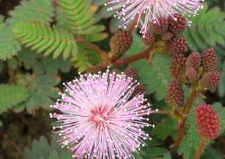

Specie: Mimosa pudica
Taxonomy: Fabaceae; Caesalpinioideae; mimosoid clade; Mimoseae; Mimosa
Abbr: Mpu
Level: Chromosome
chromosome number: 2n=2X=52

Introduction: Mimosa pudica (from Latin: pudica "shy, bashful or shrinking"; also called sensitive plant, sleepy plant, action plant, touch-me-not, shameplant) is a creeping annual or perennial flowering plant of the pea/legume family Fabaceae. It is often grown for its curiosity value: the compound leaves fold inward and droop when touched or shaken,being sensitive and re-open a few minutes later. Mimosa pudica is not a carnivorous plant. In the UK it has gained the Royal Horticultural Society's Award of Garden Merit. The species is native to the Caribbean and South and Central America, but is now a pantropical weed, and can now be found in the Southern United States, South Asia, East Asia, Micronesia, Australia, South Africa, and West Africa as well. It is not shade-tolerant and is primarily found on soils with low nutrient concentrations. Mimosa pudica is well known for its rapid plant movement. Like a number of other plant species, it undergoes changes in leaf orientation termed "sleep" or nyctinastic movement. The foliage closes during darkness and reopens in light. This was first studied by French scientist Jean-Jacques d'Ortous de Mairan. Due to Mimosa's unique response to touch, it became an ideal plant for many experiments regarding plant habituation and memory.
Distribution: Bahamas, Belize, Bolivia, Brazil North, Brazil Northeast, Brazil South, Brazil Southeast, Brazil West-Central, Cayman Is., Colombia, Costa Rica, Cuba, Dominican Republic, Ecuador, El Salvador, French Guiana, Guatemala, Guyana, Haiti, Honduras, Jamaica, Leeward Is., Mexico Central, Mexico Southeast, Mexico Southwest, Nicaragua, Peru, Puerto Rico, Southwest Caribbean, Suriname, Trinidad-Tobago, Venezuela, Windward Is.
Article Title: Phylogenomics reveals multiple losses of nitrogen-fixing root nodule symbiosis